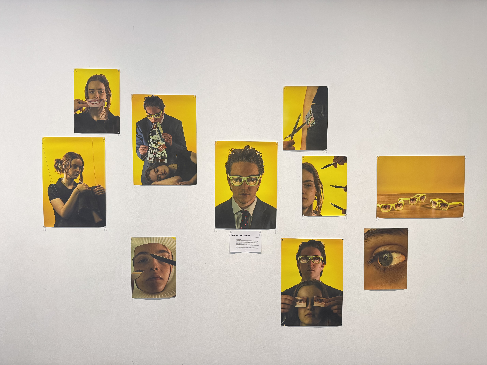

‘Who’s in Control’; is an independent portrait series produced by myself in 2025 during my studies at RMIT.
About.
My work focuses on who’s controlling the narrative in today’s Western world and the relationship between those in charge and those who have no choice but to live in their world, conforming to their beliefs. Inspired by the works of Maurizio Cattelan and Pierpaolo Ferrari, my ideas are expressed through surrealism, trying to capture the feeling of control through the uncanny, visualising how those in power tell you to feel. I want you to feel uncomfortable, going through these images, not wanting to look either of them in the eye.
This work was shot using lenses from the 1970s to create this soft-focused, hazy effect. I then manipulated the light, shadows, texture, and objects used to detach itself from reality to create this intimate otherworldly effect.
Through my work, I want to create a space for reflection, to consider how much you see on a day-to-day basis, whether it is by your own choice or is being fed to you by an algorithm that only sees you as a sheep to exploit for their gain, trying to manipulate your own thoughts and stop you from questioning what’s truly going on around you.